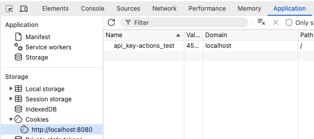

Demo Mode¶
Goals¶
Allows anyone on the web to anonymously and securely use some aspects of the Plant Tracer web app
Allow the anonymous demo user to experience plant movement tracking in the app without requiring the user to create an account in a course or to be aware of the movie lifecycle of upload, track, publish, delete
Disallow the persistence of modifications to all webapp-managed data while in demo mode
Functions¶
Will allow:
View the list of movies in a single table
Play a movie without tracking
Click on ‘analyze’ to show the user interface for playing a movie that has a stored trace
Download a CSV representation of movie trace data
Will not allow:
No uploading of movies
No deleting of movies
No renaming of titles, descriptions
No deleting or adding trackpoints
No editing any text
No re-tracking of movies
Required in the database¶
Demo mode user with their own API key and course (dbmaint.py –create_course with –demo_email will do this)
Tracked movies in the demo mode user’s course (dbmaint.py –create_course with –demo_email will automatically inserts all the movies it finds in tests/data into the database)
Currently, be aware that the demo movies must be tracked and published manually after the demo movies are populated into the database
Implementation¶
Only checks for demo mode if
DEMO_MODEenvironment variable is set to 1If
DEMO_MODEis set and there is no user logged in, then we are in DEMO_MODEIf the logged-in user’s demo attribute is true (1), then demo mode is available
If we are in DEMO_MODE
auth.get_user_api_key()
If there is a user logged in, we get that user
If there is no user logged in, we get the demo user
Once we get the demo user, the web browser’s API_KEY cookie will be set to the demo user. So logging out will remove it and the immediately set back it
(To get out of demo mode, you’ll need to click on a link that has a different API key)
user_demoJavaScript global variable set to1(if in demo mode)user_demoJinja2 variable will get set to1(otherwise it is0)More straightforward than conditional page rendering is using css classes to control the displaying of HTML elements for demo mode
Class
demoelements display only if in demo modeClass
nodemoelements display only if not in demo mode
Troubleshooting/Development Note¶
Plant-Tracer webapp creates an api_key-<database name> cookie in order to tracker the login state of a session. Sometimes this cookie does not clear itself upon logout and it is necessary to manually delete the cookie, especially in order to have a valid demo mode enabled.
Here is an example of such a cookie:
